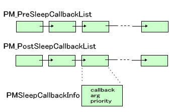

TWL では通常の状態(アクティブ状態) と別に スリープ状態になって電池の消費を抑えることができます。通常のゲームは、蓋を閉じることでスリープに入り、蓋を開けることでスリープから復帰するように作られます。これは、ハードウェアの機能でそのようになっているのではなく、「蓋を閉めた」という動作をアプリケーション側で検出し、「スリープする」という関数を呼び出すことによります。ここではスリープ関連の関数群を説明します。
スリープモードに入る命令は、PM_GoSleepMode() です。
この命令ではスリープモードからの復帰要因を以下から指定することが出来ます。これらは論理輪を取ることで複数のものを指定することが出来ます。詳細は
PM_GoSleepMode() のリファレンスを参照してください。
| プラットフォーム | 値 | 復帰要因内容 |
|---|---|---|
|
|
PM_TRIGGER_KEY | キー割り込み発生 |
|
|
PM_TRIGGER_RTC_ALARM | RTCのアラーム割り込み発生 |
|
|
PM_TRIGGER_COVER_OPEN | ふたを開く |
|
|
PM_TRIGGER_CARD | カード割り込み発生 またはカードを抜く |
|
|
PM_TRIGGER_CARTRIDGE (注1) | カートリッジ割り込み発生 またはカートリッジを抜く |
 |
PM_TRIGGER_SDIO | SDIO 割り込み |
(注1) カートリッジ抜けによってスリープから復帰する方法はガイドラインで禁止されています。
スリープコールバックは、
typedef void (*PMGenCallback) (void *);
で定義されるように、void* 引数を一つとる void 型関数です。
内部では、スリープの直後に呼ばれるコールバックと、復帰直後に呼ばれるコールバックそれぞれをリストで保持しています。スリープ前コールバック、スリープ後コールバックと呼びます。

コールバックには優先度が設定されています。アプリケーションで使用できる優先度は
-255 (PM_CALLBACK_PRIORITY_MIN) 〜 255 (PM_CALLBACK_PRIORITY_MAX) です。( SDKライブラリやミドルウェアなど、システムでは -65535 (PM_CALLBACK_PRIORITY_SYSMIN) 〜65535 (PM_CALLBACK_PRIORITY_SYSMAX)の優先度を用いることができます。) この優先度はコールバックリストの順序を決定するのに用いるためにのみ使用されます。値の小さいものが、リスト中でより前に位置します。
コールバック情報構造体 PM_SetSleepCallbackInfo() でコールバック関数と引数を設定しその情報構造体をリストに登録します。
登録は3種類の方法で行うことが出来ます。
PM_PrependPreSleepCallback(), PM_PrependPostSleepCallback()PM_AppendPreSleepCallback(), PM_AppendPostSleepCallback()PM_InsertPreSleepCallback(), PM_InsertPostSleepCallback()この辺りの仕様は、終了コールバックと同様ですので、例などは 概要：シャットダウン・ハードウェアリセット の 「終了コールバックの登録」を参照してください。
設定したコールバックは PM_DeletePreSleepCallback(), PM_DeletePostSleepCallback() で削除することが出来ます。
PM_DumpSleepCallback() は、デバッグ用途で、コールバックの一覧を表示する関数です。FINALROM ビルドでは何も行いません。
スリープモード時には、システム全体の状態がアクティブモード時とは異なるために、アクティブモード時と同様なシャットダウン処理を行うこと(保証すること)が困難です。そのため、スリープモード時にはシャットダウン処理を行わず、スリープモード移行時に必要な処理を事前に行うようにしています。
ですので、TWLとしてはスリープモード時に突然電源が落とされても問題はありません。結果としてアクティブモードで電源ボタンを押されたときと同じ振る舞いになります。
SDK で登録されるスリープコールバックでは以下の処理を行います。
スリープ前のコールバックは以下の通りです。
SNDEX_SetIgnoreHWVolume() による保存値があればスピーカー音量を戻す。
スリープから復帰してからのコールバックは以下の通りです。
2009/04/13 電源/リセットボタン → 電源ボタン に修正
2009/02/03 登録される終了コールバックに SNDEX における処理を追記
2008/09/13 初版